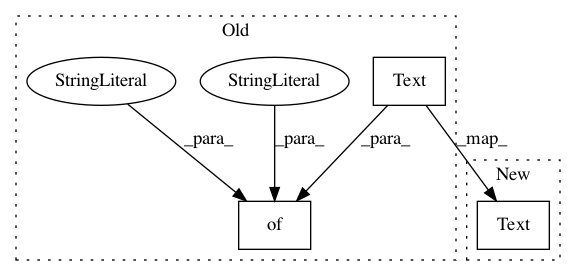

48ac31c254ba0c8f4caebabfda3cc5bade839fda,tensorflow_datasets/text/civil_comments.py,CivilComments,_info,#CivilComments#,84
Before Change
builder=self,
description=_DESCRIPTION,
// tfds.features.FeatureConnectors
features=tfds.features.FeaturesDict({
"text": tfds.features.Text(),
"toxicity": tf.float32,
"severe_toxicity": tf.float32,
"obscene": tf.float32,
"threat": tf.float32,
"insult": tf.float32,
"identity_attack": tf.float32,
"sexual_explicit": tf.float32
}),
// The supervised_keys version is very impoverished.
supervised_keys=("text", "toxicity"),
homepage="https://www.kaggle.com/c/jigsaw-unintended-bias-in-toxicity-classification/data",
After Change
]
def _info(self):
features = {"text": tfds.features.Text()}
labels = [
"toxicity", "severe_toxicity", "obscene", "threat", "insult",
"identity_attack", "sexual_explicit"
In pattern: SUPERPATTERN
Frequency: 3
Non-data size: 3
Instances
Project Name: tensorflow/datasets
Commit Name: 48ac31c254ba0c8f4caebabfda3cc5bade839fda
Time: 2020-06-30
Author: no-reply@google.com
File Name: tensorflow_datasets/text/civil_comments.py
Class Name: CivilComments
Method Name: _info
Project Name: tensorflow/datasets
Commit Name: 3be1154314111df8cd327a321fe3d68e7b661c68
Time: 2020-05-29
Author: charlespatel07@gmail.com
File Name: tensorflow_datasets/text/pg19.py
Class Name: Pg19
Method Name: _info
Project Name: tensorflow/datasets
Commit Name: 783136d42cf62bdb1f4043c6a88158b462a7aaea
Time: 2020-10-15
Author: adarob@google.com
File Name: tensorflow_datasets/text/c4.py
Class Name: C4
Method Name: _info